赛事数据
说明：赛事数据默认为不开启状态，首页开启赛事资讯需下发相关资源，资源下发成功后客户端才能生效；子品牌站点也支持配置赛事数据进行展示。
点击右上角【修改】进入编辑状态，编辑状态下展示完整的配置
一、赛事数据
1、是否开启赛事直播：必填，单选，选择开启后，首页直播悬浮窗或赛事资讯必须开启任意一个，才能保存；若未开启赛事直播，客户端的赛事资讯主页则不展示直播区（仅展示热门赛程和赛程列表），但进入某一比赛详情页，如果有正在播放的直播还是会播放该场比赛直播
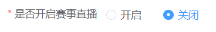
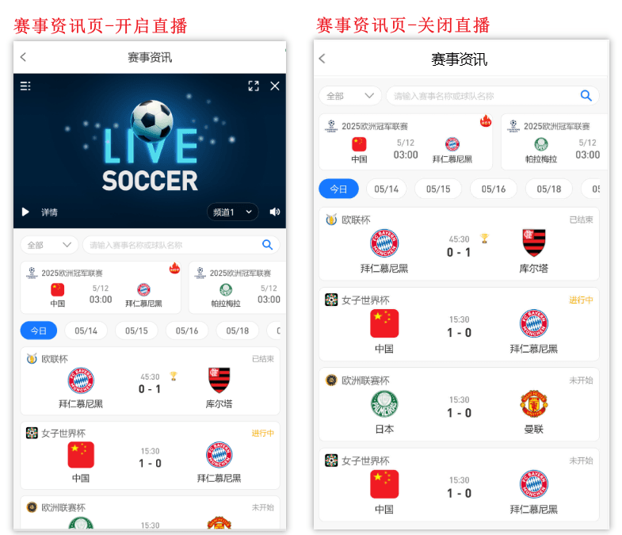
2、首页直播悬浮窗：必填，单选，选择展示，客户端首页和二级页面会展示直播悬浮窗；选择隐藏，客户端则不展示
3、首页直播悬浮窗默认状态：必填，单选，选择展开，用户进入客户端首页时，直播悬浮窗为展开状态；选择收起，直播悬浮窗则收起在左侧
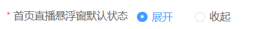
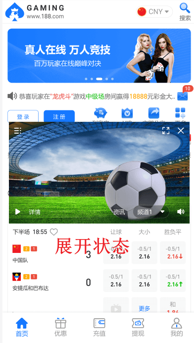
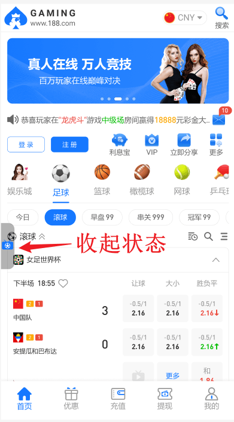
4、悬浮窗收起状态图标：必填，上传后，直播悬浮窗为收起状态时展示该图标
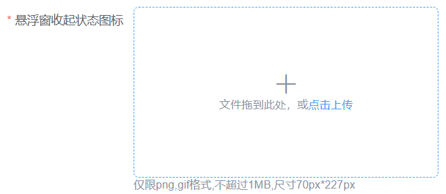
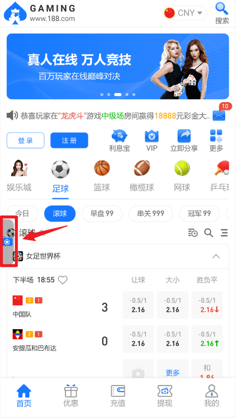
5、直播背景图：必填，单选，支持上传一张自定义背景图
6、直播加载失败图：必填，支持上传一张，当直播播放失败时才展示此图片，无直播是展示直播背景图
7、是否开启赛事资讯：必填，单选，选择开启，客户端则展示赛事资讯入口及赛事资讯页面；
8、客户端入口名称：支持自定义修改，客户端入口名称根据设置的语言及名称进行展示，若某语言未设置名称，则取设置的英文名称，若没有设置英文名称，默认展示【赛事资讯】的英文翻译
9、赛程管理：非必填，支持勾选某赛事或具体比赛是否展示到首页、设为热门、隐藏；支持拖拽排序，为符合用户习惯和方便用户查看即将进行或正在进行的比赛，客户端会优先按时间排序，时间相同的情况下，按后台配置的赛事顺序进行展示。
（1）是否展示到首页：勾选【是】，则该赛事赛程会展示在首页直播悬浮窗的列表内，前提是有开启首页直播悬浮窗
（2）是否设为热门：勾选【是】，该赛事赛程将展示在赛事资讯主页的热门区域，每天最多展示8条热门信息，仅展示当天的热门赛程
（3）是否隐藏：勾选【是】，客户端将不再展示对应的赛事赛程
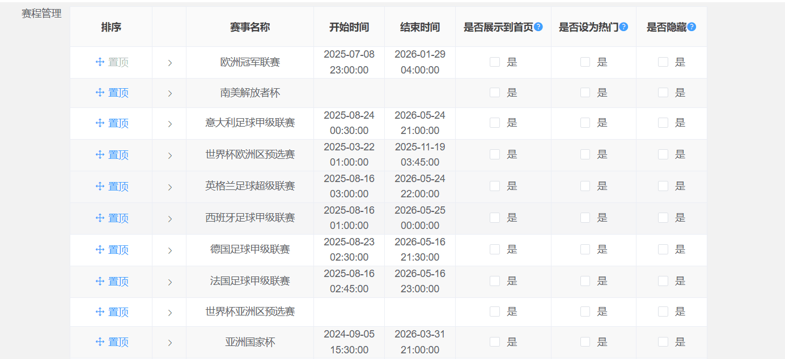
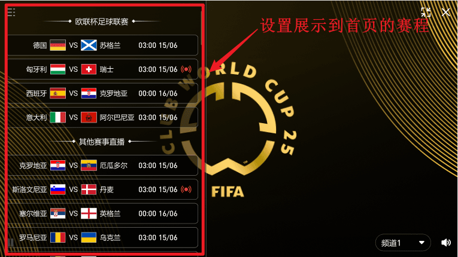
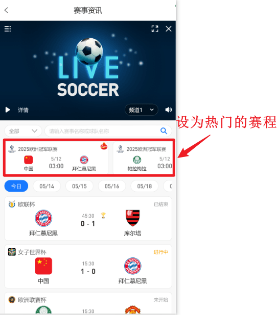
10、赛程展示内容：非必填，多选；客户端的赛事详情页将根据此项配置展示内容
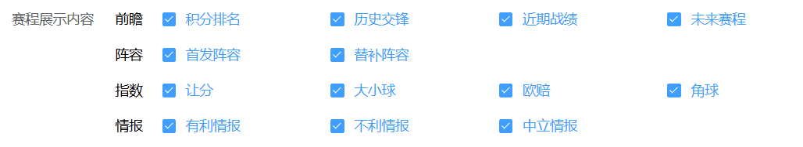
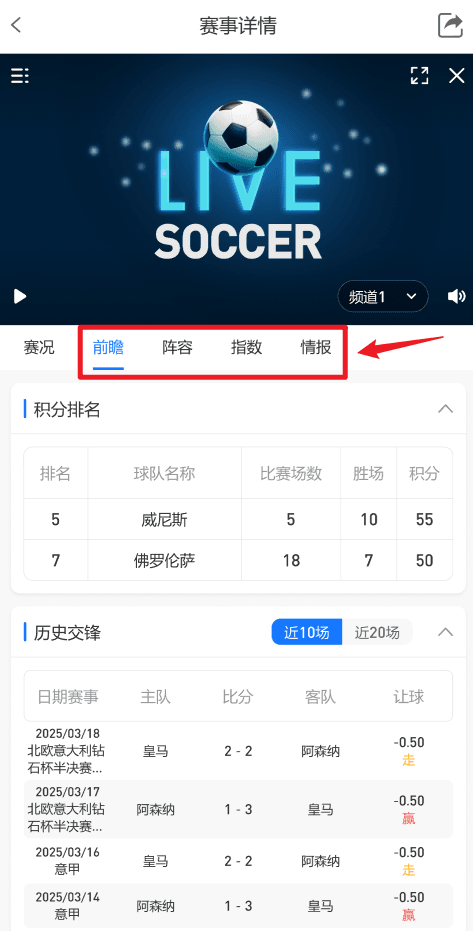